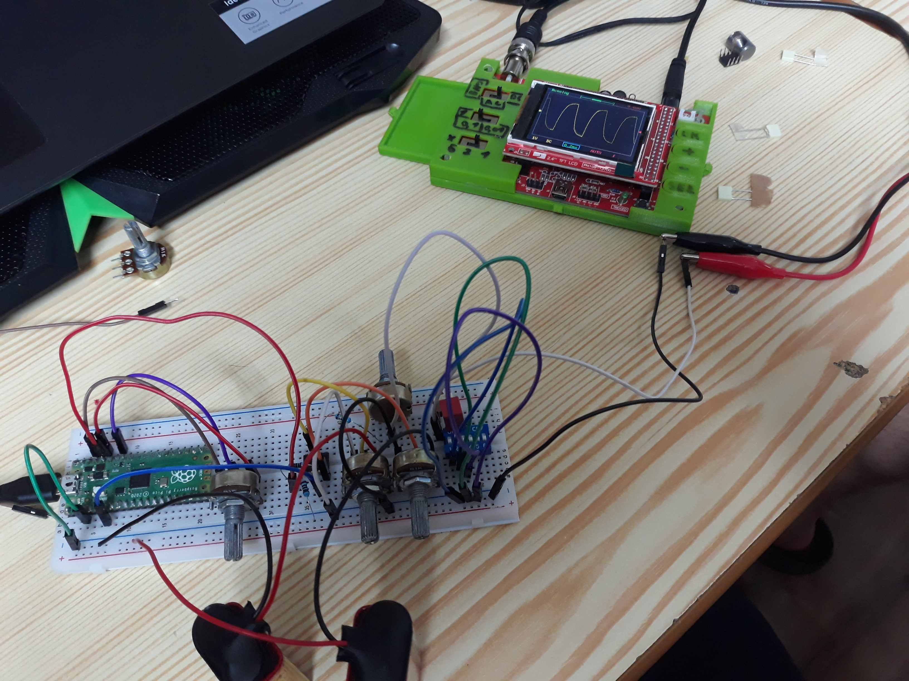
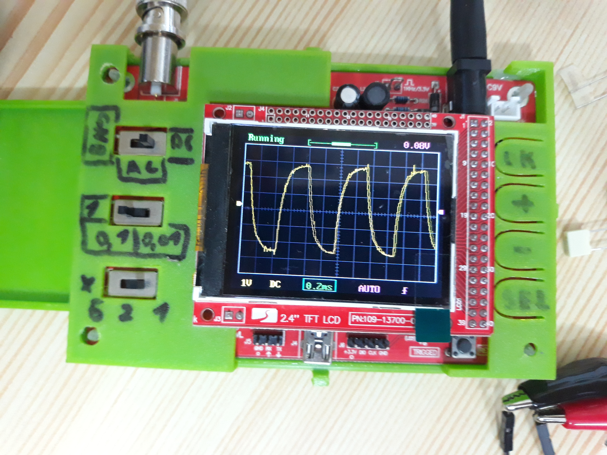
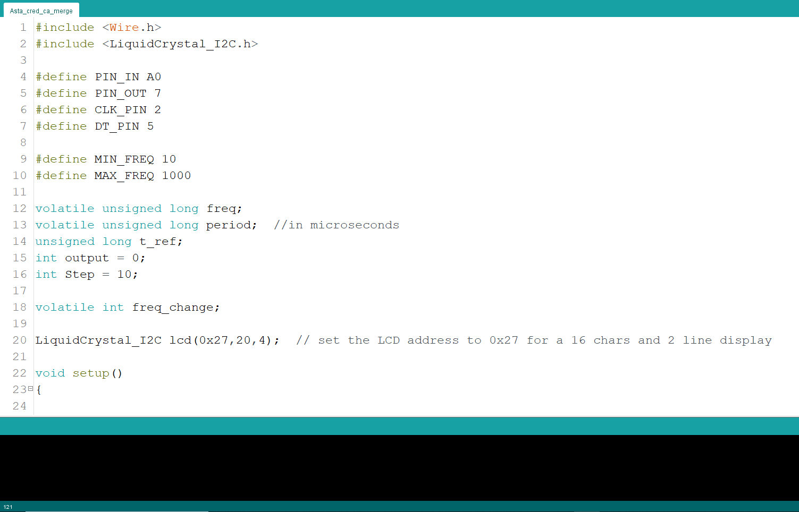

The most awaited part of school this semester is the electronic devices lab. There, we test the newly learned circuits with the help of a power supply, a signal generator and an osciloscope.
A power supply can be anything. And I have a crude oscilloscope. Cârnaț Darian, my colleague, came up with the idea of building a signal generator. At first, I thought it would be too hard, after all, signal generators are big, expensive devices. But after thinking about it, it became clear such a project is well within the realm of reality.
The end goal of the project is a voltage signal generator. It should:
NOTICE! The project is not yet ready. We currently work on building a PCB and a case around the working circuit.

In this project, Darian and I used knowledge learned at "electronic devices", our favourite topic this semester.
At the heart of the device lays an operational amplifier which commutes the output between the positive and
negative voltage supplied by the batteries.
That was the biggest problem. How do we get both positive and negative output? The Op Amp is a saviour.
Perfect would be for the generated signal to mimic a sine wave. We however settled on a sawtooth. The effect is made by 2 capacitors whose charging and discharging cycles round the corners of the signal. We can choose between the 2 of them according to the output frequency.
The PCB is currently in development, therefore the case is not yet designed.
If the Op Amp is the heart, then the brain is an Arduino nano.
The problem we faced in programming the Arduino is the 4 microseconds clock speed at whitch Arduino functions. Therefore, we limited the maximum output frequency to 1KHz.
